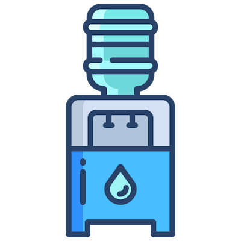

110+
110+
Water Dispensers
SP cultivates eco-conscious habits by encouraging students and staff to use water dispensers around campus and have ceased the use of plastic bottled water at our events..

13
Diplomas featuring Common Core Curriculum (CCC)
The CCC provides students with an education that prepares them for the green economy. Through inter-disciplinary learning experiences and a focus on global issues aligned with the SG Green Plan and the UNSDGs, students learn to create prototype sustainability solutions for real-world challenges
500+
Smart Sensors
Many facilities on the SP campus are monitored with smart sensors to track human traffic and monitor air quality for the health and well-being of students and staff.